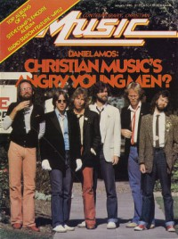

Daniel AmosOn the cover
January 1980
Contemporary Christian Music | Media coverage:- Jul 1978 in Logos Journal "Arts & Entertainment: Daniel Amos", by Mike Atkinson
- Nov 1978 in Campus Life "Spotlight: Daniel Amos"
- Jan 1980 in Contemporary Christian Music "Christian Music's Angry Men?", by Davin Seay
- Mar 1981 in Contemporary Christian Music "Records: Whatever Happened to Horrendous Disc?", by Karen Marie Platt
- Mar 1981 in Contemporary Christian Music "Records: New Daniel Amos LP: No False Alarm"
- May 1982 in Contemporary Christian Music "Concert Review: DA Transcends Stereotypical Rock", by Lori E. Pike
- Mar 1983 in Contemporary Christian Music "Daniel Amos"
- 1983 in Cornerstone "Interview: Daniel Amos", by Chris Bajkiewicz
- Aug 1983 in Contemporary Christian Magazine "New Music For New Hearts", by Mary Neely
- Aug 1984 in Contemporary Christian Magazine "Concerts: Fox Theatre, Redwood City, CA", by Karen Marie Platt
- Oct 1984 in Campus Life "Expressions: Life After Christian Music", by Patrick Kampert
- Win 1987 in Harvest Rock Syndicate "Man With A Mission: Terry Taylor", by T. L. Faris
- Feb 1987 in CCM "In Concert: York Suburban High School, York, PA", by Nathan Clemons
- Jul 1987 in CCM "The Mad Genius of Terry Scott Taylor", by Brian Quincy Newcomb
- Jan 1988 in CCM "Toys in the Band: Daniel Amos"
- Spr 1989 in Harvest Rock Syndicate "The Spinning Vortex Into An Overnight Success", by Kevin Allison
- Nov 1991 in CCM "The Band That Won't Go Away", by Thom Granger
- Jan 1993 in Syndicate "The Gang's Back For A Whole New Ride", by Dan MacIntosh
- Mar 1993 in Notebored "Daniel Amos"
- Jul 1998 in CCM "Don't You Forget About Me: Daniel Amos"
- Jan 1999 in 7ball "History: Daniel Amos", by Brian Quincy Newcomb
- Jul 1999 in CCM "In Concert: Jesus People Reunion, Arrowhead Pond, Anaheim, CA"
- Sep 2001 in HM "Wrapped Up In Ribbons & Bows: The Life Death and Resurrection of Daniel Amos", by J. Edward Keyes
- Dec 2003 in CCM "Hall of Fame: Daniel Amos", by Michael Ciani
- Sep 2004 in CCM "List-O-Rama: 5 Examples of the Secret Connection between Christian Music and Game Shows", by Chris Well
- Mar 2009 in Down The Line "Gene "Eugene" Andrusco: His Friends and Family Remember: Terry Scott Taylor (Daniel Amos, The Swirling Eddies, The Lost Dogs) on Gene Eugene"
- May 2011 in Down The Line "Terry Scott Taylor: Daniel Amos Hits the Road Again", by Steve Ruff
Albums & reviews:1981: ¡Alarma! (The Alarma Chronicles Vol.1)
1981: A New Radio Special - An Intimate Insight
1983: Doppelgänger: The "¡Alarma! Chronicles" Volume II
1984: Vox Humana: The ¡Alarma! Chronicles Vol. III
1987: Darn Floor: Big Bite
1990: Live Bootleg '82
1992: Doppelgänger [reissue]
1993: Vox Humana [Reissue]
1994: Preachers from Outer Space: Live at the Anaheim Center, Easter Weekend 1978
1998: Our Personal Favorite World Famous Hits
2000: Live at Cornerstone 2000
2000: The ¡Alarma! Chronicles
2001: Mr. Buechner's Dream
2003: Live In Anaheim 1985 (Get Ready To Confront Your Double) DVD
2005: The Making Of...Mr. Buechner's Dream (Rehearsals, Studio Recording, Live Performance) DVD
2007: Instruction Through Film ( A "Random History" Home Movie Collection) DVD
2008: Darn Floor: Big Bite [Remastered]
2011: Shotgun Angel (Collector's Edition)
2013: Dig Here Said the Angel
2014: Doppelganger (deluxe collector's edition)
Books about Daniel Amos
- "Daniel Amos (a.k.a. DA and da and dä)" in The Encyclopedia of Contemporary Christian Music (Mark Allan Powell, 2002).
- "Daniel Amos (DA)" in The Billboard Guide to Contemporary Christian Music (Barry Alfonso, 2002).
|